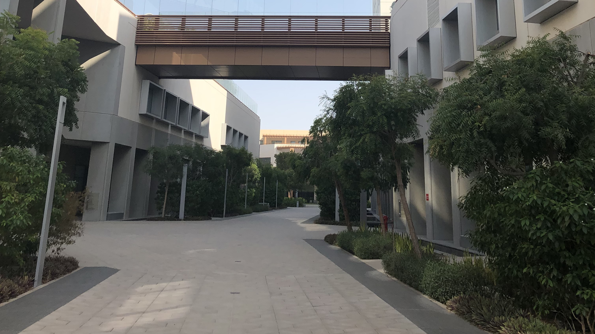

Home
About Us
Filmmakers' Statement
Details
Technical Details
Filming Locations
Technical Details
Genre: Docufiction
Running Time: 59 seconds
Aspect Ratio: 16:9
Song: Stayin' Alive by Bee Gees
Edited using: DaVinci Resolve
Shot on: iPhone 12
Filming Locations
NYUAD Entrance
Outside Arts Center
Inside Convenience Store

Outdoors Walkway
❮
❯
TAKE ME BACK UP